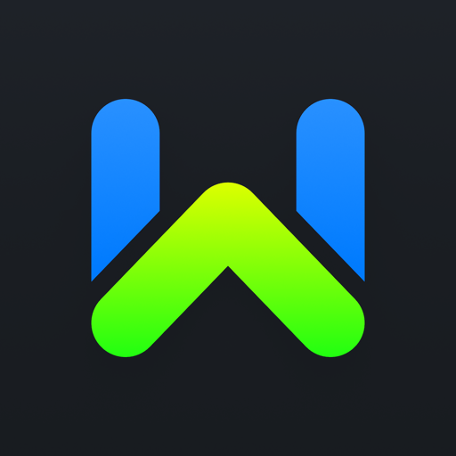
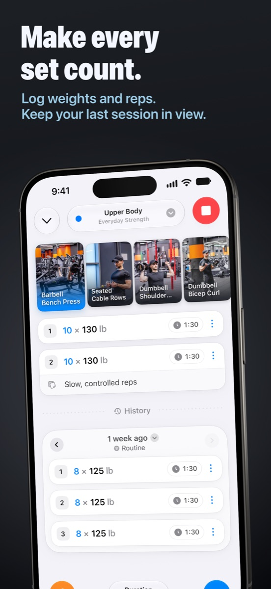
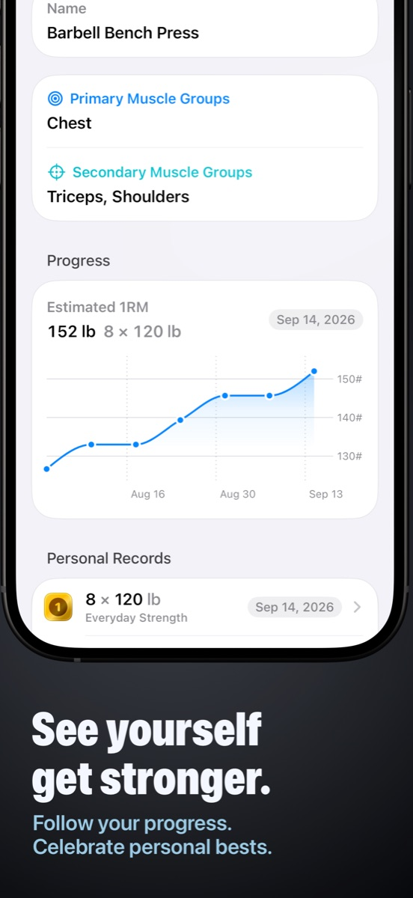
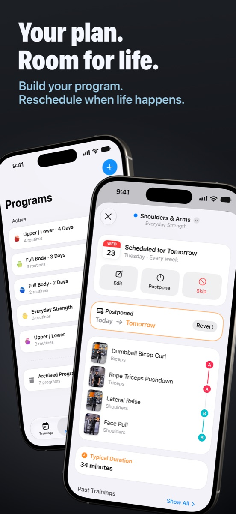
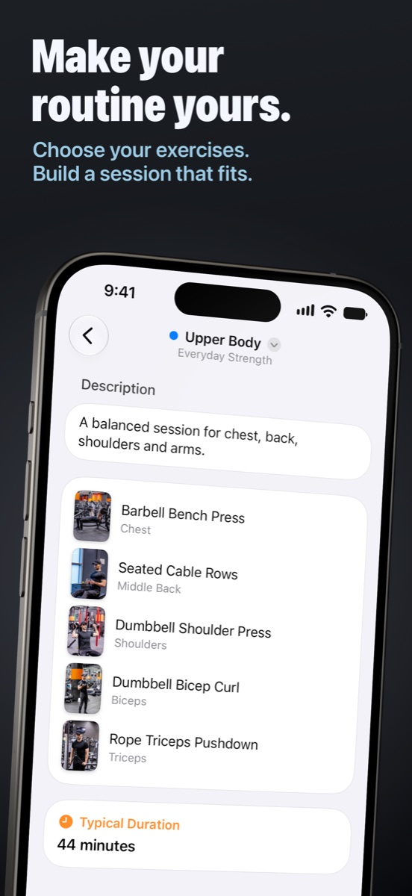
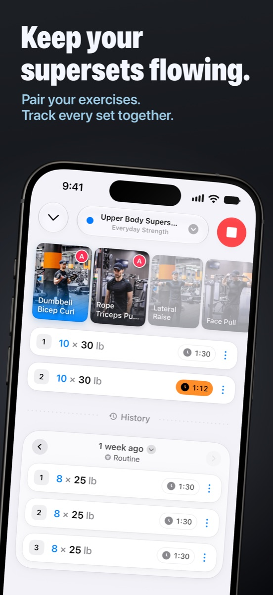
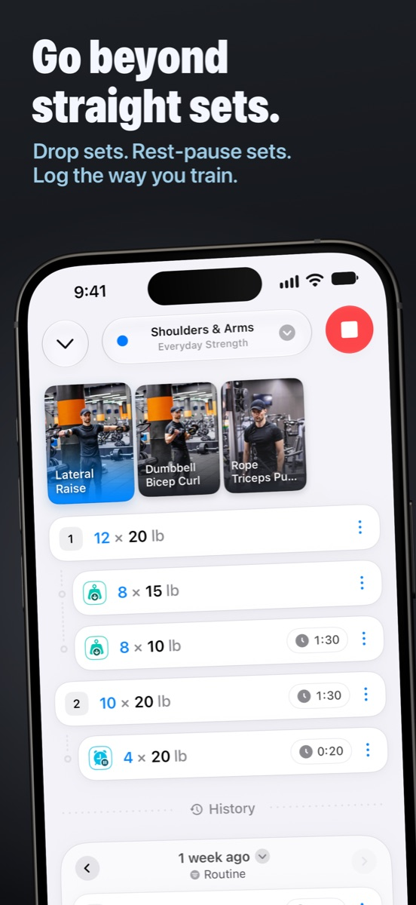
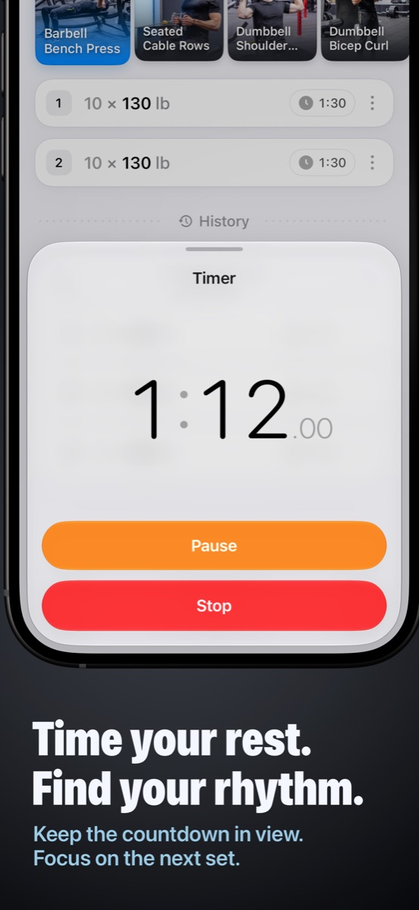
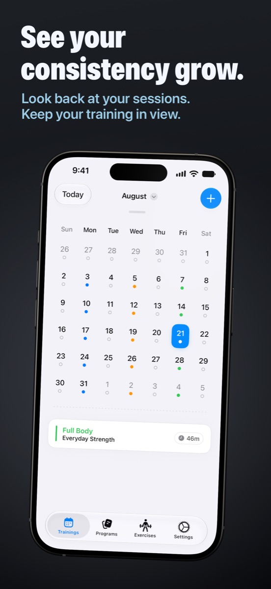
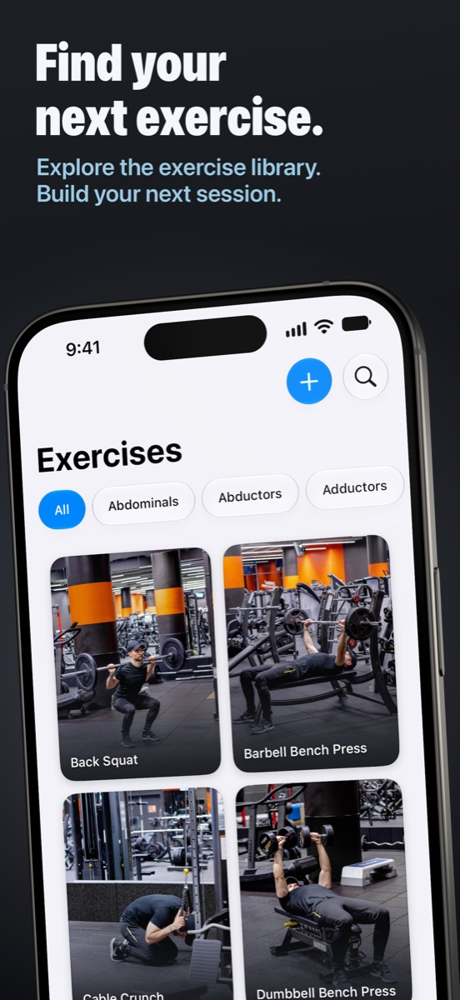

-
Your training, your way
Start with a built-in program or create your own. Choose your exercises, organize your routines, and schedule your sessions. When plans change, postpone a workout and keep going.
-
Log every effort
Record weights and repetitions, add notes, and review previous sessions as you train. Use supersets, drop sets, and rest-pause sets to capture the way you actually work out.
-
See your progress
Explore exercise progression charts, estimated one-rep max, and personal records. Look back through your training calendar and see the consistency behind your progress.
-
Find your rhythm
Keep your rest countdown in view and get ready for the next set. Browse the illustrated exercise library to build your next session.

Workout
Make every set count.
Plan your strength training, record each session, and see your progress over time.








